A
Compact selector
A bottom sheet on mobile. A centred modal on desktop. The clearest starting point.
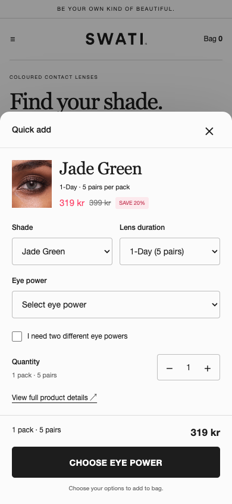
Three quick-add experiences. One familiar SWATI card. All the essential lens choices, without leaving the collection.
Click a mockup to enlarge it.
Use “Try concept” to explore the flow.
A bottom sheet on mobile. A centred modal on desktop. The clearest starting point.

More space to review the choices. A side drawer on desktop and a tall sheet on mobile.
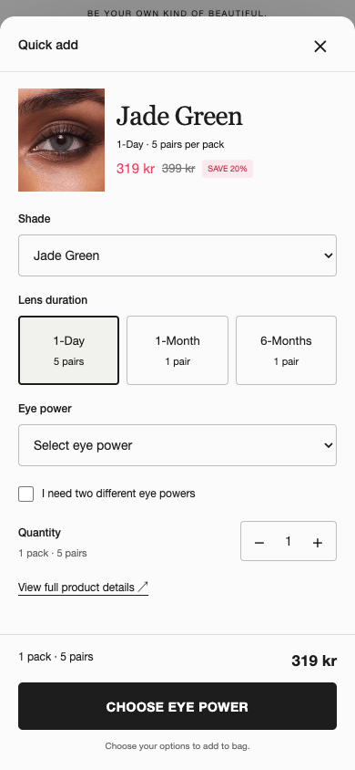
Choose lenses, then eye power. Less to process at once, with one extra step to complete.
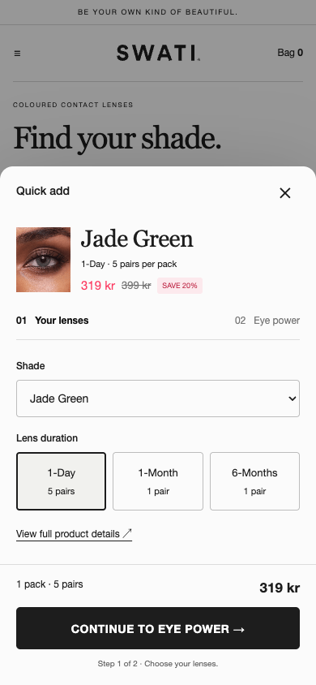
Choose the popup and its entry separately. The three popup concepts above all use the same labelled button.
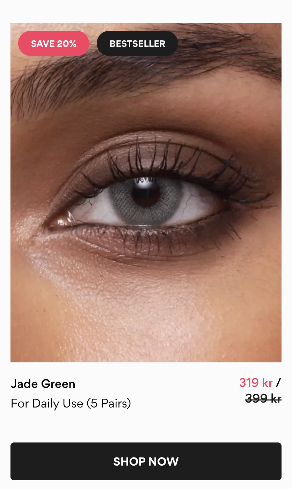
Shop now opens the PDP. Supplied screenshot.
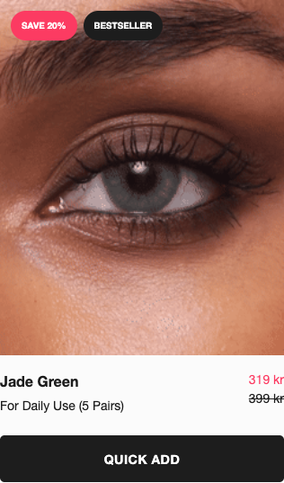
Highest visibility, same footprint. Image and title retain the PDP route.
Try this entry ↗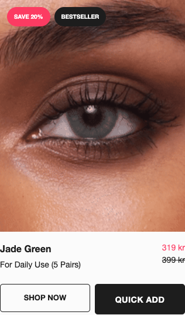
Both journeys are explicit. Adds visual weight and mobile card height.
Try this entry ↗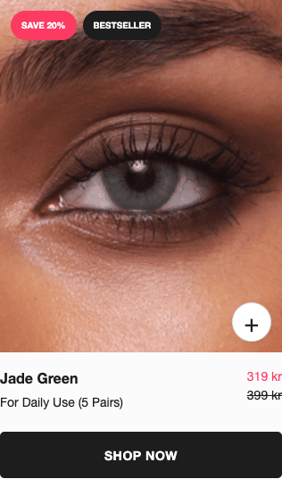
Keeps the current CTA. Less explicit, and places a control over the eye photo.
Try this entry ↗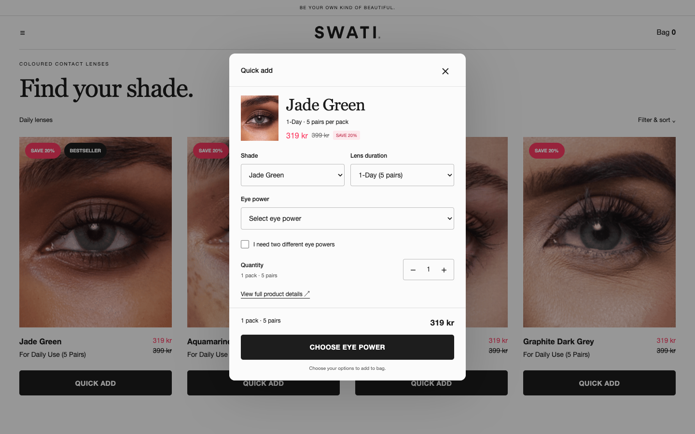
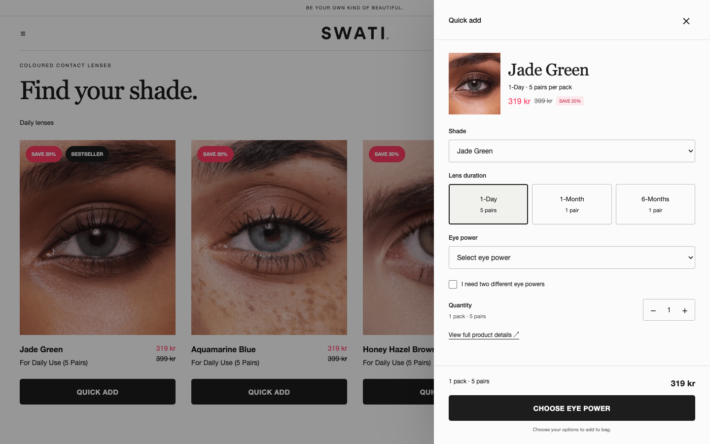
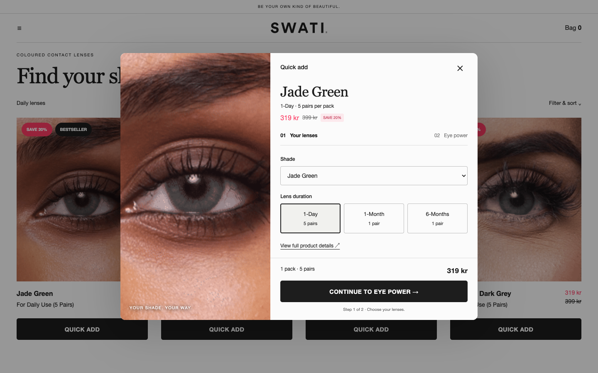
Show that consequence before adding. Keep the total visible, and confirm exactly what went into the bag.
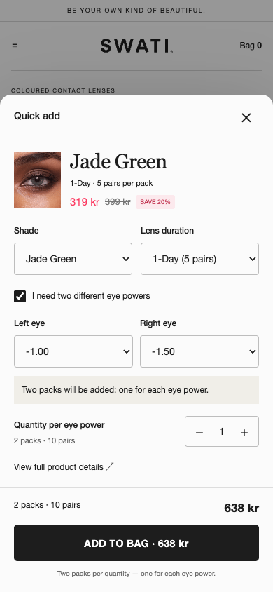
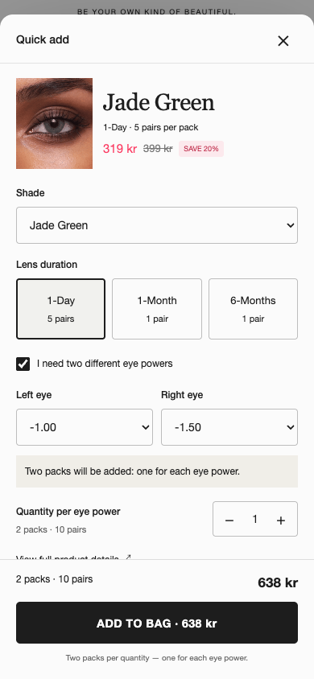
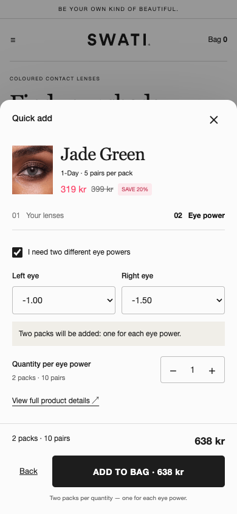
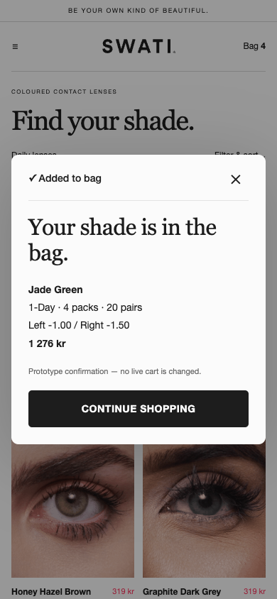
Every concept supports separate left and right powers. The summary shows the selected shade, duration, pack count and combined total.
This example follows increasing quantity to two per eye: four packs total.
Try the two-power flow →Confirmation example follows increasing quantity to two per eye: four packs total. Production should hand off to SWATI’s existing cart drawer. This prototype never changes a real cart.
The sampled trimmer opens a product modal with colour choices before adding. This is the closest match to SWATI’s need.
Reference ↗ · Observed modalThe sampled item goes straight into a cart drawer. Borrow its clear confirmation; SWATI needs eye-power selection before that point.
Reference ↗ · Observed drawerThe rendered configurator exposes size, length and pack choices, and asks for a size before adding. Its collection popup was not separately verified.
Reference ↗50/50 visitor assignment. Current Shop now journey against the compact quick-add journey. Keep photography, badges, pricing and product order the same between arms.
Primary: revenue per eligible visitor.
Read alongside: order conversion, AOV, abandonment, errors and mobile performance.
Set the sample size and stopping rule using the store’s baseline. An increase in quick-add usage alone is not a win.
Shade and duration resolve linked products; eye power selects the variant. Two powers create two packs. Price, stock and availability must update with the selection.
Run the experiment through Intelligems on global first. A winning treatment gets a proper theme implementation after the test.
Back to the mobile concepts ↑Design exploration, not a live store build. Real SWATI photography and supplied card reference; no generated lens colours. Prices are snapshots. Fonts are approximations and the collection header is simplified. Availability, network error handling and live cart integration remain implementation work.
{kind=link}
{kind=link}
{kind=link}
{kind=link}
{kind=link}